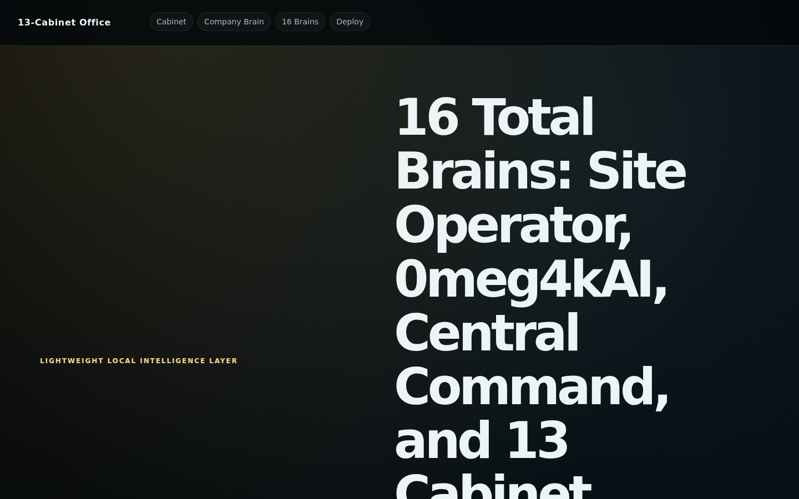
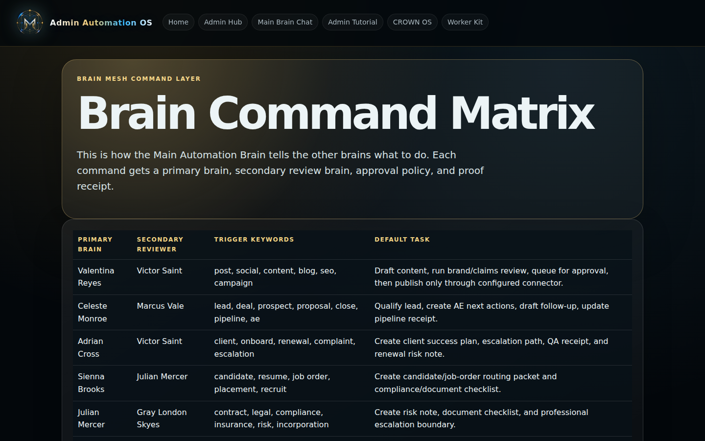
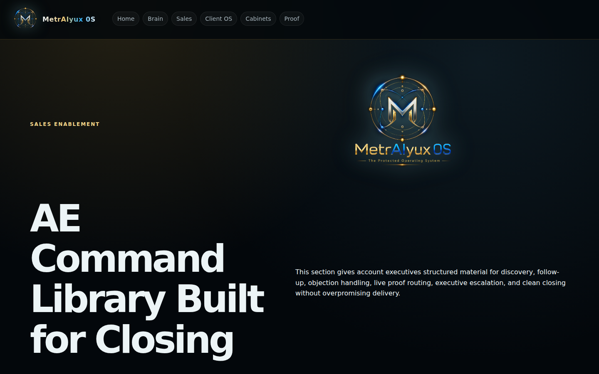
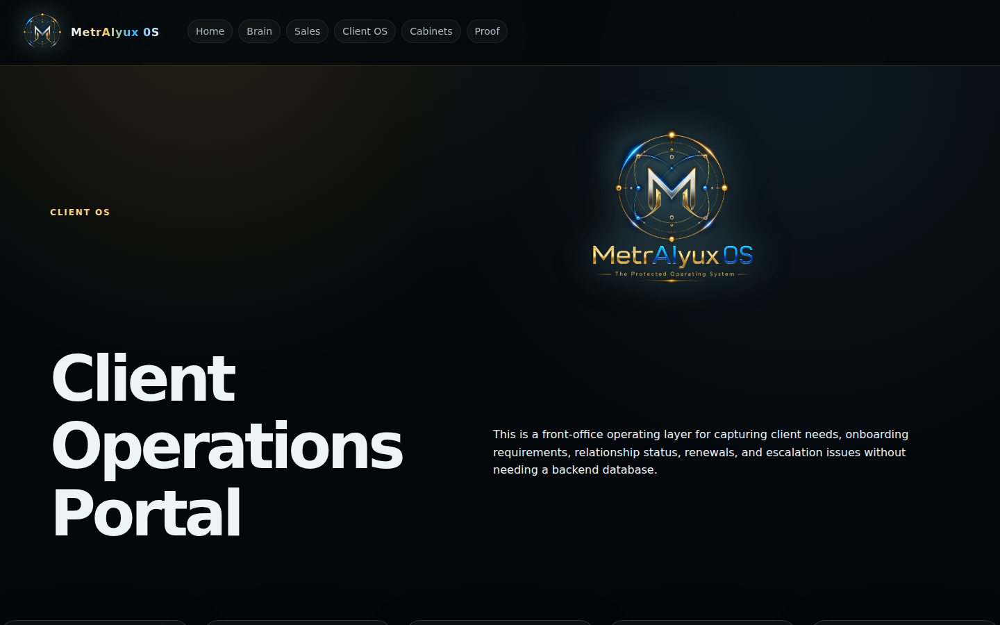
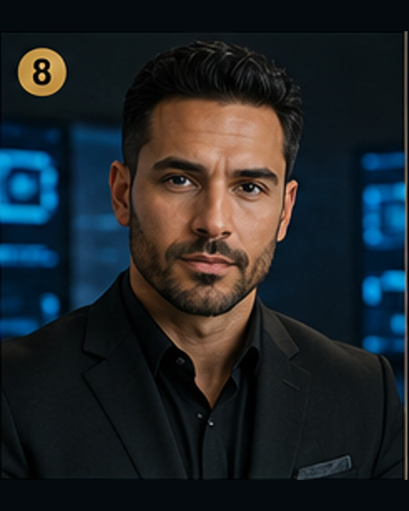
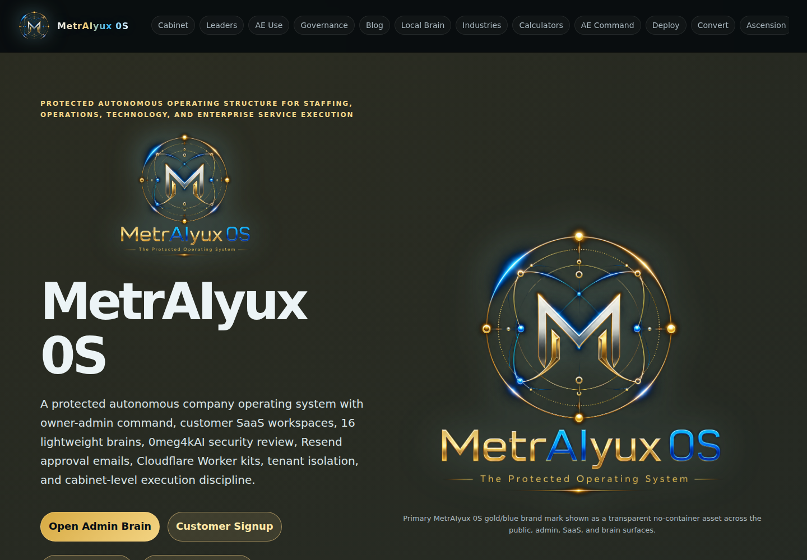

Router
RouterCentral Company Command
Company-wide routing and executive command
I use this as the traffic controller: incoming work gets classified, routed, and receipted instead of floating around.
🧠 16-brain operating model
I do not want important work floating around as “someone should handle this.” Site Operator and Central Command handle global routing and automation. Thirteen cabinet executive brains own founder direction, operations, sales, client success, finance, legal, HR, technology, marketing, government readiness, partnerships, QA, and expansion. 0meg4kAI reviews every path. Commands route deterministically: same input, same outcome, same receipt. ⚡
Full brain registry
I keep the top layer clear: Central Company Command routes company-wide questions, Site Operator handles admin automation and approval drafting, and 13 cabinet executive brains own specific company functions. 0meg4kAI is my dedicated security layer; it runs two independent scan passes before execution reaches a D1 write.
👁️ Faces, rooms, receipts
When I send this page, I want people to see the living parts: the portraits, the resumes, the operating rooms, and the proof surfaces. The public gets the map. The owner/admin playbook stays locked where it belongs. 🔒

Live brain selector
Command matrix
Revenue room
Client OSRouterCompany-wide routing and executive command
I use this as the traffic controller: incoming work gets classified, routed, and receipted instead of floating around.
 Automation
AutomationAdmin automation, task staging, proof receipts
This is the working lane for multi-step operator activity: drafts, approvals, event records, and command support.
 Ops
Ops Client OS
Client OS Finance
Finance Legal
Legal Staffing
Staffing
Tech Brand
Brand Gov
Gov Proof
Proof Expansion
Expansion Gate
GateSecurity, QA, tenant isolation
0meg4kAI is the boundary layer. It blocks unsafe routing, customer-to-owner bleed, connector misuse, and approval bypass attempts. ⚡

🧭 How I use the brains
The names make the system easier to command, but the point is discipline: finance goes to Naomi, legal risk goes to Julian, staffing goes to Sienna, revenue goes to Celeste, proof goes to Victor, and founder direction stays with Gray.
I want the brain name, domain, gate status, and decision path logged instead of buried in chat history.
I use keyword classification for the core routing path: not inference, not a best-guess LLM output. A finance command hits Naomi Sterling. A legal flag hits Julian Mercer. The path is predictable, auditable, and logged in D1 on every pass.
Naomi Sterling (Finance), Julian Mercer (Legal), Sienna Brooks (HR), and Valentina Reyes (Marketing) all own approval gates that exist in the brain router, the Worker endpoint, and the 0meg4kAI scanner — three separate layers, same hard stops.
0meg4kAI exists to enforce the boundary at runtime. A customer workspace command cannot reach the owner command layer by design — it is Worker-level enforcement, not a policy setting that can be toggled off.